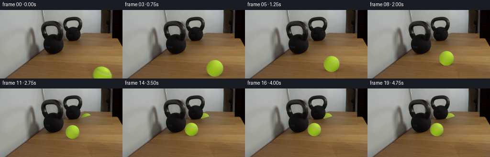
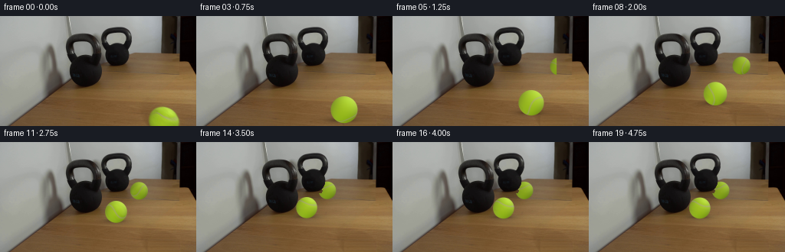
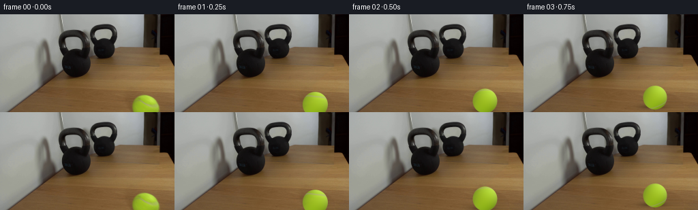

CODING AGENTS AS PIXEL WORLD MODELS
traex/GPT-6.1-Sol · 0154
点击播放 · 原生 RGB 像素
逐轮保存的候选
回放视频、检查图与代码变化。
每份候选均可单独播放。实际图片检查记录在下方工具轨迹中。
候选 01播放与检查图
点击播放 · 原生 RGB 像素

展开代码变化
--- 上一保存版本
+++ 本次保存版本
@@ -0,0 +1,221 @@
+from pathlib import Path
+import numpy as np
+from PIL import Image
+from scipy.ndimage import map_coordinates, gaussian_filter
+from scipy.spatial.transform import Rotation
+from artifact_io import save
+
+ROOT=Path(__file__).resolve().parent
+SOURCE=np.asarray(Image.open(ROOT/'first_frame.png').convert('RGB'), dtype=np.uint8)
+H,W=SOURCE.shape[:2]
+Y,X=np.indices((H,W),dtype=float)
+CX,CY,RX,RY=213.236,137.792,19.14,19.2
+
+# Fixed plate: the table grain under the initial, partly cropped ball is
+# continued from the adjacent, unobstructed surface of the same photograph.
+def clean_plate():
+ a=SOURCE.astype(float)
+ out=a.copy()
+ xx=np.arange(W,dtype=float)
+ region=np.sqrt(((X-CX)/1.0)**2+((Y-CY)/1.0)**2)
+ erase=np.clip((22.0-region)/1.2,0,1)
+ erase[Y<117]=0
+ for y in range(117,H):
+ use=np.r_[np.arange(173,191),np.arange(238,256)]
+ v=np.polyfit((use-213)/40,a[y,use],2)
+ smooth=np.stack([np.polyval(v[:,c],(xx-213)/40) for c in range(3)],1)
+ # Grain is predominantly aligned with the table's horizontal boards.
+ grain=a[y,np.clip((xx-48).astype(int),0,W-1)]
+ grain=grain-gaussian_filter(grain,(0,0)) if False else grain
+ localtrend=gaussian_filter(grain, sigma=(5,0))
+ fill=smooth+.65*np.clip(grain-localtrend,-7,7)
+ out[y]=out[y]*(1-erase[y,:,None])+fill*erase[y,:,None]
+ return out
+
+PLATE=clean_plate()
+
+# Camera calibration from the two stationary weight silhouettes and the
+# circular ball. Coordinates are centimetre-like arbitrary physical units.
+F=240.0
+HORIZON=-50.0
+THETA=np.arctan((72-HORIZON)/F)
+CO,SI=np.cos(THETA),np.sin(THETA)
+R=3.3
+CAM_H=R+CO*(CY-HORIZON)*R/RX
+
+def unproject(x,y,height):
+ scale=CO*(y-HORIZON)/(CAM_H-height)
+ d=F/scale
+ return np.array([(x-128)/scale,(d-(CAM_H-height)*SI)/CO])
+
+def project(p,height):
+ x,z=p
+ d=(CAM_H-height)*SI+z*CO
+ return np.array([128+F*x/d,72+F*((CAM_H-height)*CO-z*SI)/d,F*R/d])
+
+P0=unproject(CX,CY,R)
+P1=unproject(142.8,84.8,R)
+PATH=P1-P0
+LENGTH=np.linalg.norm(PATH)
+DIRECTION=PATH/LENGTH
+KB=unproject(115,92,0)
+KB_MIRROR=unproject(151,65,0)
+MIRROR_N=(KB_MIRROR-KB)/np.linalg.norm(KB_MIRROR-KB)
+MIRROR_M=(KB_MIRROR+KB)/2
+
+# Diffuse shading coefficients measured only on the first ball, excluding
+# its seam. The smooth spatial illumination remains stationary while the
+# small felt detail and stitched seam rotate with the rolling ball.
+sx=(X-CX)/RX
+sy=(Y-CY)/RY
+sz=np.sqrt(np.maximum(0,1-sx*sx-sy*sy))
+features=np.stack([np.ones_like(sx),sx,sy,sz,sx*sy,sx*sx,sy*sy],-1)
+valid=(sx*sx+sy*sy<.88)&(Y>=119)&(SOURCE[:,:,2]<77)&~((SOURCE[:,:,2]>50)&(sy>-.6)&(sx<.6))
+COEF=np.linalg.lstsq(features[valid],SOURCE.astype(float)[valid],rcond=None)[0]
+RESID=SOURCE.astype(float)-features@COEF
+RESID=np.clip(RESID,-5,5)
+# Continuous closed tennis-ball seam on a unit sphere.
+SEAM_ROT=Rotation.from_rotvec([-2.4882024,-.25521345,.43247905]).as_matrix()
+SEAM_A=.40891585
+
+# The ball always meets the stationary heavy kettlebell, not its image.
+# Foreground masks keep every source kettlebell edge and texture untouched.
+def smooth_mask(m):
+ return np.clip(gaussian_filter(m.astype(float),.30),0,1)
+real_weight=(X>87)&(X<138)&(Y>21)&(Y<95)&(np.mean(SOURCE,axis=2)<65)
+ref_weight=(X>132)&(X<173)&(Y>12)&(Y<67)&(np.mean(SOURCE,axis=2)<65)
+REAL_OCC=smooth_mask(real_weight)
+REF_OCC=smooth_mask(ref_weight)
+
+SS=3
+hy,hx=np.indices((H*SS,W*SS),dtype=float)
+hx=(hx+.5)/SS-.5
+hy=(hy+.5)/SS-.5
+
+# Roll axis is parallel to the tabletop and perpendicular to translation.
+WORLD_TO_CAMERA=np.array([[1.,0.,0.],[0.,-CO,-SI],[0.,SI,-CO]])
+axis_world=np.array([DIRECTION[1],0.,-DIRECTION[0]])
+axis_cam=WORLD_TO_CAMERA@axis_world
+axis_cam/=np.linalg.norm(axis_cam)
+
+
+def reduce(a):
+ return a.reshape(H,SS,W,SS,*a.shape[2:]).mean(axis=(1,3))
+
+
+def ball_layer(center,angle,reflection=False,compression=0.):
+ cx,cy,rad=center
+ # Slight ellipticity observed in the source; no scale drift independent
+ # of the perspective projection.
+ radius_y=rad*RY/RX
+ nx=(hx-cx)/(rad*(1-compression))
+ ny=(hy-cy)/radius_y
+ rho=nx*nx+ny*ny
+ nz=np.sqrt(np.maximum(0,1-rho))
+ alpha=np.clip((1-np.sqrt(rho))*rad*SS+.5,0,1)
+ xyz=np.stack([nx,ny,nz],-1)
+ if reflection:
+ # Virtual camera sees the reflected orientation (opposite handedness).
+ material=xyz.copy()
+ material[:,:,0]*=-1
+ roll=Rotation.from_rotvec(axis_cam*angle).as_matrix()
+ material=material@roll
+ else:
+ roll=Rotation.from_rotvec(axis_cam*angle).as_matrix()
+ material=xyz@roll
+ q=material@SEAM_ROT
+ field=q[:,:,1]-SEAM_A*(q[:,:,0]**2-q[:,:,2]**2)
+ grad=np.stack([-2*SEAM_A*q[:,:,0],np.ones_like(nx),2*SEAM_A*q[:,:,2]],-1)
+ tangent=grad-q*np.sum(grad*q,axis=-1,keepdims=True)
+ dist=field/np.maximum(.25,np.linalg.norm(tangent,axis=-1))
+ seam=np.exp(-.5*(dist/.042)**2)
+ bf=np.stack([np.ones_like(nx),nx,ny,nz,nx*ny,nx*nx,ny*ny],-1)
+ color=bf@COEF
+ # The pale seam is shaded with the same illumination as the green felt.
+ seam_color=color*.73+np.array([48.,33.,68.])
+ color=color*(1-seam[:,:,None])+seam_color*seam[:,:,None]
+ tx=CX+RX*material[:,:,0]
+ ty=CY+RY*material[:,:,1]
+ known=(material[:,:,2]>.15)&(ty>=119)&(ty<143)
+ residual=np.stack([map_coordinates(RESID[:,:,c],[ty,tx],order=1,mode='nearest') for c in range(3)],-1)
+ residual*=known[:,:,None]
+ # Deterministic, subpixel-scale felt, kept in material coordinates.
+ noise=(np.sin(83*material[:,:,0]+27*material[:,:,2])*np.sin(99*material[:,:,1]-49*material[:,:,2]))
+ color+=residual*.65+noise[:,:,None]*1.05
+ # A gentle limb falloff and photograph-like optical softness.
+ limb=np.clip((.16-nz)/.16,0,1)
+ color-=limb[:,:,None]*np.array([5.,8.,3.])
+ if reflection:
+ color=color*.87+np.array([2.5,2.5,2.0])
+ # Mirror aperture: the dark frame on the right and the table in
+ # front remain opaque. At t=0 the whole ball reflection is outside.
+ right=np.clip((213.6-hx)*SS+.5,0,1)
+ # The glass/table junction rises towards the rear right corner.
+ lower=np.clip((48.0+.303*(214-hx)-hy)*SS+.5,0,1)
+ alpha*=right*lower
+ aa=reduce(alpha)
+ prem=reduce(color*alpha[:,:,None])
+ if reflection:
+ aa*=1-REF_OCC
+ prem*=1-REF_OCC[:,:,None]
+ else:
+ aa*=1-REAL_OCC
+ prem*=1-REAL_OCC[:,:,None]
+ return prem,aa
+
+
+def shadow(frame,p,reflection=False):
+ contact=project(p,0)
+ cx,cy,rad=contact
+ if reflection:
+ return frame
+ # Very soft area-light shadow on wood plus a tighter contact shadow.
+ ax=rad*.92
+ ay=rad*.22
+ g=np.exp(-.5*(((X-cx+rad*.12)/ax)**2+((Y-cy)/ay)**2))
+ core=np.exp(-.5*(((X-cx)/(.62*rad))**2+((Y-cy)/(.105*rad))**2))
+ strength=(.14*g+.23*core)*(1-REAL_OCC)
+ return frame*(1-strength[:,:,None])
+
+
+def reflected(p):
+ return p-2*np.dot(p-MIRROR_M,MIRROR_N)*MIRROR_N
+
+
+def main():
+ frames=[SOURCE.copy()]
+ impact_time=3.25
+ rebound_duration=.85
+ rebound_distance=.65
+ for i in range(1,20):
+ t=i/4
+ if t<=impact_time:
+ fraction=t/impact_time
+ p=P0+PATH*fraction
+ traveled=LENGTH*fraction
+ else:
+ dt=min(rebound_duration,t-impact_time)
+ # An inelastic impact followed by friction. A 30-lb mass has
+ # imperceptible response to the much lighter tennis ball.
+ away=rebound_distance*(2*dt/rebound_duration-(dt/rebound_duration)**2)
+ p=P1-DIRECTION*away
+ traveled=LENGTH-away
+ angle=traveled/R
+ frame=PLATE.copy()
+ rp=reflected(p)
+ rcolor,ra=ball_layer(project(rp,R),angle,reflection=True)
+ frame=frame*(1-ra[:,:,None])+rcolor
+ frame=shadow(frame,p)
+ compression=.012 if i==13 else 0
+ col,a=ball_layer(project(p,R),angle,compression=compression)
+ frame=frame*(1-a[:,:,None])+col
+ frames.append(np.clip(np.rint(frame),0,255).astype(np.uint8))
+ frames=np.stack(frames)
+ assert np.array_equal(frames[0],SOURCE)
+ save(frames,ROOT)
+ (ROOT/'.tmp').mkdir(exist_ok=True)
+ Image.fromarray(np.uint8(np.clip(PLATE,0,255))).save(ROOT/'.tmp'/'clean_plate.png')
+ np.save(ROOT/'.tmp'/'generated_frames.npy',frames)
+
+if __name__=='__main__':
+ main()
候选 02播放与检查图
点击播放 · 原生 RGB 像素


展开代码变化
--- 上一保存版本
+++ 本次保存版本
@@ -26,7 +26,6 @@
smooth=np.stack([np.polyval(v[:,c],(xx-213)/40) for c in range(3)],1)
# Grain is predominantly aligned with the table's horizontal boards.
grain=a[y,np.clip((xx-48).astype(int),0,W-1)]
- grain=grain-gaussian_filter(grain,(0,0)) if False else grain
localtrend=gaussian_filter(grain, sigma=(5,0))
fill=smooth+.65*np.clip(grain-localtrend,-7,7)
out[y]=out[y]*(1-erase[y,:,None])+fill*erase[y,:,None]
@@ -147,12 +146,12 @@
color-=limb[:,:,None]*np.array([5.,8.,3.])
if reflection:
color=color*.87+np.array([2.5,2.5,2.0])
- # Mirror aperture: the dark frame on the right and the table in
- # front remain opaque. At t=0 the whole ball reflection is outside.
+ # Mirror aperture: the dark frame on the right remains opaque.
+ # The brown area below the reflected wall is reflected tabletop,
+ # not an opaque border; the reflected ball remains visible there.
+ # At t=0 its virtual image lies beyond the mirror's right edge.
right=np.clip((213.6-hx)*SS+.5,0,1)
- # The glass/table junction rises towards the rear right corner.
- lower=np.clip((48.0+.303*(214-hx)-hy)*SS+.5,0,1)
- alpha*=right*lower
+ alpha*=right
aa=reduce(alpha)
prem=reduce(color*alpha[:,:,None])
if reflection:
可观测工具轨迹
实际执行的命令与返回图片。
命令 1exit 0
/bin/bash -lc 'ls -la; cat prompt.txt; cat GENERATION_RULES.md'
命令 2exit 0
/bin/bash -lc "cat artifact_io.py; python - <<'PY'
from PIL import Image
import numpy as np
im=np.array(Image.open('first_frame.png').convert('RGB'))
print(im.shape)
# quantized colors ascii
h,w=im.shape[:2]
for y in range(0,h,3):
line=''
for x in range(0,w,3):
r,g,b=im[y:y+3,x:x+3].mean(axis=(0,1));
if max(r,g,b)<45:c='@'
elif max(r,g,b)<90:c='#'
elif g>r*1.12 and g>b*1.3:c='G'
elif r>g*1.35 and g>b*1.1:c='w'
elif r>g*1.15 and r>b*1.4:c='t'
elif min(r,g,b)>190:c='.'
elif max(r,g,b)-min(r,g,b)<20:c='o'
else:c='-'
line+=c
print(f'{y:03}: {line}')
PY"命令 3exit 0
/bin/bash -lc "python - <<'PY'
from PIL import Image
import numpy as np
A=np.asarray(Image.open('first_frame.png'))
for y in range(0,144,2):
s=''
for x in range(0,256,2):
r,g,b=A[y:y+2,x:x+2].mean((0,1)); v=(r+g+b)/3
if g>r*1.05 and g>b*1.20:c='Y'
elif r>g*1.12 and r>b*1.3:c='t' if v>95 else 'w'
else:c='@#XOox:. '[min(int(v//28),8)]
s+=c
print(f'{y:03d} {s}')
print('RGB rows sampled')
for y in [0,20,40,48,56,65,75,90,100,110,120,140]:
print(y,[(x,A[y,x].tolist()) for x in range(0,256,10)])
PY"命令 4exit 0
/bin/bash -lc "python - <<'PY'
import numpy as np
from PIL import Image
A=np.array(Image.open('first_frame.png')).astype(float)
# green segment
m=(A[:,:,1]>A[:,:,0]*1.06)&(A[:,:,1]>A[:,:,2]*1.5)&(A[:,:,1]>95)
for y in range(110,144):
xs=np.where(m[y])[0];print(y,(xs.min(),xs.max()) if len(xs) else '',[(x,A[y,x].astype(int).tolist()) for x in range(193,237,4)])
# Ball closeup numerical symbols label
for y in range(113,144):
s=''
for x in range(190,240):
r,g,b=A[y,x]
if g>r+4 and g>b+60: c='Y' if g>190 else ('g' if g>150 else 'o')
elif r>150 and g>145 and b>80:c='S'
elif r>140 and g>125 and b>60:c='s'
elif g>r:c='+'
else:c='.'
s+=c
print(y,s)
PY"命令 5exit 0
/bin/bash -lc "python - <<'PY'
import numpy as np
from PIL import Image
from scipy.optimize import least_squares
A=np.array(Image.open('first_frame.png')).astype(float)
m=(A[:,:,1]>A[:,:,0]+10)&(A[:,:,1]>A[:,:,2]+75)&(A[:,:,1]>110)
Y,X=np.where(m&(np.indices(m.shape)[0]>110))
pts=[]
for y in np.unique(Y):
xx=X[Y==y];
pts.extend([(xx.min()-0.5,y),(xx.max()+0.5,y)])
pts=np.array(pts)
res=least_squares(lambda q:((pts[:,0]-q[0])/q[2])**2+((pts[:,1]-q[1])/q[3])**2-1,[214,138,20,20])
print(res.x,res.cost)
PY"命令 6exit 0
/bin/bash -lc "mkdir -p .tmp; python - <<'PY'
import numpy as np
from PIL import Image
from scipy.optimize import least_squares
A=np.array(Image.open('first_frame.png')).astype(float)
cx,cy,rx,ry=213.2359,137.7923,19.1055,19.183
Y,X=np.indices(A.shape[:2]);nx=(X-cx)/rx;ny=(Y-cy)/ry;nz=np.sqrt(np.maximum(0,1-nx*nx-ny*ny))
inside=(nx*nx+ny*ny<.88)&(Y>=119)
# shading fit with low blue exclude white seam
valid=inside&(A[:,:,2]<77)&~((A[:,:,2]>50)&(ny>-.6)&(nx<.6))
B=np.stack([np.ones_like(nx),nx,ny,nz,nx*ny,nx*nx,ny*ny],-1)
coef=np.linalg.lstsq(B[valid],A[valid],rcond=None)[0]
pred=B@coef
print('coeffs',coef)
res=A-pred
sm=inside&(res[:,:,2]>14)
ys,xs=np.where(sm)
print('seam pixels',list(zip(xs.tolist(),ys.tolist())))
# fit seam plane
xyz=np.c_[nx[sm],ny[sm],nz[sm]]
print('seam XYZ',xyz.min(0),xyz.max(0))
q=least_squares(lambda q:xyz@q[:3]-q[3],np.array([.5,-.8,.3,.2]),bounds=(-1,1))
# use SVD
u,s,v=np.linalg.svd(np.c_[xyz,np.ones(len(xyz))]);print('plane',v[-1],s)
# camera
f=240.;pc=128;hz=14;theta=np.arctan((72-hz)/f);co=np.cos(theta);si=np.sin(theta);R=3.3;H=R+co*(cy-hz)*R/rx
def unproject(x,y,h):
s=co*(y-hz)/(H-h);d=f/s;return np.array([(x-pc)/s,(d-(H-h)*si)/co])
def proj(p,h):
x,z=p;d=(H-h)*si+z*co;return np.array([pc+f*x/d,72+f*((H-h)*co-z*si)/d,f*R/d])
a=unproject(115,91,0);b=unproject(151,63,0);n=(b-a)/np.linalg.norm(b-a);mid=(a+b)/2
print('H',H,'KB',a,'reflection',b,'n',n)
for t in np.linspace(0,1,6):
p=(1-t)*unproject(cx,cy,R)+t*unproject(142.5,84.5,R);pr=p-2*np.dot(p-mid,n)*n
print(t,'ball',proj(p,R),'ref',proj(pr,R))
PY"命令 7exit 0
/bin/bash -lc "python - <<'PY'
import numpy as np
from PIL import Image
A=np.array(Image.open('first_frame.png'))
# table color crossing by row and column
for x in range(60,239,5):
brown=(A[:,x,0].astype(int)-A[:,x,1]>12)&(A[:,x,0].astype(int)-A[:,x,2]>25)&(A[:,x,0]>55)
yy=np.where(brown)[0];print(x, yy.min() if len(yy) else None)
print('mid diagonal values')
for y in range(38,76,2):
print(y, ' '.join(f'{x}:{A[y,x].tolist()}' for x in range(132,217,6)))
PY"命令 8exit 0
/bin/bash -lc "python - <<'PY'
from PIL import Image
import numpy as np
A=np.array(Image.open('first_frame.png'))
# examine light text in bodies: ascii high res
for x1,x2,y1,y2 in [(92,136,59,93),(134,168,36,67)]:
print('object',x1,x2)
for y in range(y1,y2):
s=''
for x in range(x1,x2):
r,g,b=map(int,A[y,x]); v=(r+g+b)/3
s+=' ' if v<15 else ('.' if v<22 else ('o' if v<30 else ('X' if v<50 else '#')))
print(y,s)
PY"命令 9exit 0
/bin/bash -lc "python - <<'PY' import numpy as np cx,cy,rr=213.236,137.792,19.1;f=240;pc=128;R=3.3 for hz in [-50,-20,0,15,30,45]: th=np.arctan((72-hz)/f);co=np.cos(th);si=np.sin(th);H=R+co*(cy-hz)*R/rr def unp(x,y,h): s=co*(y-hz)/(H-h);d=f/s;return np.array([(x-pc)/s,(d-(H-h)*si)/co]) def proj(p,h): x,z=p;d=(H-h)*si+z*co;return (pc+f*x/d,72+f*((H-h)*co-z*si)/d,f*R/d) a=unp(115,92,0);b=unp(151,65,0);n=(b-a)/np.linalg.norm(b-a);mid=(a+b)/2 ps=[] for xy in [(cx,cy),(145,84)]: p=unp(*xy,R);pr=p-2*np.dot(p-mid,n)*n;ps.append(proj(pr,R)) print(hz,ps) PY"
命令 10exit 0
/bin/bash -lc "python - <<'PY'
import numpy as np
cx,cy,r=213.236,137.792,19.1;f=240;hz=-50;pc=128;R=3.3
co=np.cos(np.arctan((72-hz)/f));si=np.sqrt(1-co*co);H=R+co*(cy-hz)*R/r
unp=lambda x,y,h:np.array([(x-pc)*(H-h)/(co*(y-hz)),(f*(H-h)/(co*(y-hz))-(H-h)*si)/co])
p0=unp(cx,cy,R);pe=unp(146,84.5,R);a=unp(115,92,0);b=unp(151,65,0);nn=(b-a)/np.linalg.norm(b-a)
print('co H',co,H,'start end',p0,pe,'dist',np.linalg.norm(pe-p0),'rot',np.linalg.norm(pe-p0)/R,'mirror norm',nn,'mid',(a+b)/2)
PY"命令 11exit 0
/bin/bash -lc "python - <<'PY' import numpy as np f=240;hz=-50;pc=128;R=3.3;co=.891435994;si=np.sqrt(1-co*co);H=32.2233 unp=lambda x,y,h:np.array([(x-pc)*(H-h)/(co*(y-hz)),(f*(H-h)/(co*(y-hz))-(H-h)*si)/co]) a=unp(115,92,0);b=unp(151,65,0);n=(b-a)/np.linalg.norm(b-a);mid=(a+b)/2 for x in [0,50,100,120,140,160,180,200,214,240,255]: # ground line point from col view # xw=(x-128)/240*(H*si+zw*co) zw=(np.dot(n,mid)-n[0]*(x-pc)/f*H*si)/(n[0]*(x-pc)/f*co+n[1]);d=H*si+zw*co;y=72+f*(H*co-zw*si)/d print(x,round(y,1)) PY"
命令 12exit 0
/bin/bash -lc "python - <<'PY' import numpy as np for hz in [-50,-20,0,15]: f=240;cx,cy,r=213.236,137.792,19.1;R=3.3;co=np.cos(np.arctan((72-hz)/f));si=np.sqrt(1-co*co);H=R+co*(cy-hz)*R/r unp=lambda x,y,h:np.array([(x-128)*(H-h)/(co*(y-hz)),(f*(H-h)/(co*(y-hz))-(H-h)*si)/co]) a=unp(115,92,0);b=unp(151,65,0);n=(b-a)/np.linalg.norm(b-a);mid=(a+b)/2 print(hz) for x in [50,115,151,214]: zw=(np.dot(n,mid)-n[0]*(x-128)/f*H*si)/(n[0]*(x-128)/f*co+n[1]);d=H*si+zw*co;y=72+f*(H*co-zw*si)/d print(x,y) PY"
命令 13exit 0
/bin/bash -lc "python - <<'PY' import numpy as np cx,cy,r=213.236,137.792,19.14 n=np.array([-.282,.6614,-.3925]); d=-.57356;d/=np.linalg.norm(n);n/=np.linalg.norm(n) u=np.cross(n,[0,0,1]);u/=np.linalg.norm(u);v=np.cross(n,u) for t in np.linspace(0,2*np.pi,33): p=d*n+np.sqrt(1-d*d)*(u*np.cos(t)+v*np.sin(t)) if p[2]>0: print(np.round([cx+r*p[0],cy+r*p[1]],1)) PY"
命令 14exit 0
/bin/bash -lc "python - <<'PY'
try:
import cv2; print('cv2',cv2.__version__)
except: pass
PY"命令 15exit 0
/bin/bash -lc "python - <<'PY'
import numpy as np
from PIL import Image
A=np.array(Image.open('first_frame.png'))
for y in range(63,94):
xs=np.where((np.mean(A[y],axis=1)<45)&(np.arange(256)>95)&(np.arange(256)<137))[0]
print(y,xs.max() if len(xs) else None)
PY"命令 16exit 0
/bin/bash -lc "cat > .tmp/fit_seam.py <<'PY'
import numpy as np
from PIL import Image
from scipy.optimize import least_squares
from scipy.spatial.transform import Rotation
A=np.array(Image.open('first_frame.png')).astype(float)
Y,X=np.indices(A.shape[:2]);nx=(X-213.236)/19.14;ny=(Y-137.792)/19.14;nz=np.sqrt(np.maximum(0,1-nx*nx-ny*ny))
inside=(nx*nx+ny*ny<.88)&(Y>=119)
valid=inside&(A[:,:,2]<77)&~((A[:,:,2]>50)&(ny>-.6)&(nx<.6))
B=np.stack([np.ones_like(nx),nx,ny,nz,nx*ny,nx*nx,ny*ny],-1)
coef=np.linalg.lstsq(B[valid],A[valid],rcond=None)[0]
res=A-B@coef
mask=inside&(res[:,:,2]>20)&(Y>124)
xyz=np.c_[nx[mask],ny[mask],nz[mask]]
w=(res[:,:,2][mask]-10)**.5
def residual(p):
mat=Rotation.from_rotvec(p[:3]).as_matrix()
q=xyz@mat
return (q[:,1] - p[3]*(q[:,0]**2-q[:,2]**2))*w
best=None
for j in range(24):
rng=np.random.default_rng(j)
p=rng.uniform(-3,3,4);p[-1]=.7
sol=least_squares(residual,p,bounds=([-10,-10,-10,.2],[10,10,10,1.3]),max_nfev=400)
if best is None or sol.cost<best.cost:best=sol
mat=Rotation.from_rotvec(best.x[:3]).as_matrix();print(best.x,best.cost,mat)
q=np.stack([nx,ny,nz],-1)@mat
field=q[:,:,1]-best.x[3]*(q[:,:,0]**2-q[:,:,2]**2)
for y in range(119,144):
print(y,''.join('S' if abs(field[y,x])<.04 else '.' for x in range(194,235)))
PY
python .tmp/fit_seam.py"命令 17exit 0
/bin/bash -lc "python - <<'PY' import numpy as np f=240;hz=-50;R=3.3;cx,cy,r=213.236,137.792,19.14;th=np.arctan((72-hz)/f);co=np.cos(th);si=np.sin(th);H=R+co*(cy-hz)*R/r unp=lambda x,y,h:np.array([(x-128)*(H-h)/(co*(y-hz)),(f*(H-h)/(co*(y-hz))-(H-h)*si)/co]) a=unp(115,92,0);b=unp(151,65,0);mid=(a+b)/2;n=(b-a)/np.linalg.norm(b-a) for xy in [(cx,cy),(142.8,84.8)]: p=unp(*xy,R);pp=p-2*np.dot(p-mid,n)*n d=(H-R)*si+pp[1]*co print(p,pp,128+f*pp[0]/d,72+f*((H-R)*co-pp[1]*si)/d,240*R/d) print(a,b) PY"
命令 18exit 0
/bin/bash -lc "cat > generate.py <<'PY'
from pathlib import Path
import numpy as np
from PIL import Image
from scipy.ndimage import map_coordinates, gaussian_filter
from scipy.spatial.transform import Rotation
from artifact_io import save
ROOT=Path(__file__).resolve().parent
SOURCE=np.asarray(Image.open(ROOT/'first_frame.png').convert('RGB'), dtype=np.uint8)
H,W=SOURCE.shape[:2]
Y,X=np.indices((H,W),dtype=float)
CX,CY,RX,RY=213.236,137.792,19.14,19.2
# Fixed plate: the table grain under the initial, partly cropped ball is
# continued from the adjacent, unobstructed surface of the same photograph.
def clean_plate():
a=SOURCE.astype(float)
out=a.copy()
xx=np.arange(W,dtype=float)
region=np.sqrt(((X-CX)/1.0)**2+((Y-CY)/1.0)**2)
erase=np.clip((22.0-region)/1.2,0,1)
erase[Y<117]=0
for y in range(117,H):
use=np.r_[np.arange(173,191),np.arange(238,256)]
v=np.polyfit((use-213)/40,a[y,use],2)
smooth=np.stack([np.polyval(v[:,c],(xx-213)/40) for c in range(3)],1)
# Grain is predominantly aligned with the table's horizontal boards.
grain=a[y,np.clip((xx-48).astype(int),0,W-1)]
grain=grain-gaussian_filter(grain,(0,0)) if False else grain
localtrend=gaussian_filter(grain, sigma=(5,0))
fill=smooth+.65*np.clip(grain-localtrend,-7,7)
out[y]=out[y]*(1-erase[y,:,None])+fill*erase[y,:,None]
return out
PLATE=clean_plate()
# Camera calibration from the two stationary weight silhouettes and the
# circular ball. Coordinates are centimetre-like arbitrary physical units.
F=240.0
HORIZON=-50.0
THETA=np.arctan((72-HORIZON)/F)
CO,SI=np.cos(THETA),np.sin(THETA)
R=3.3
CAM_H=R+CO*(CY-HORIZON)*R/RX
def unproject(x,y,height):
scale=CO*(y-HORIZON)/(CAM_H-height)
d=F/scale
return np.array([(x-128)/scale,(d-(CAM_H-height)*SI)/CO])
def project(p,height):
x,z=p
d=(CAM_H-height)*SI+z*CO
return np.array([128+F*x/d,72+F*((CAM_H-height)*CO-z*SI)/d,F*R/d])
P0=unproject(CX,CY,R)
P1=unproject(142.8,84.8,R)
PATH=P1-P0
LENGTH=np.linalg.norm(PATH)
DIRECTION=PATH/LENGTH
KB=unproject(115,92,0)
KB_MIRROR=unproject(151,65,0)
MIRROR_N=(KB_MIRROR-KB)/np.linalg.norm(KB_MIRROR-KB)
MIRROR_M=(KB_MIRROR+KB)/2
# Diffuse shading coefficients measured only on the first ball, excluding
# its seam. The smooth spatial illumination remains stationary while the
# small felt detail and stitched seam rotate with the rolling ball.
sx=(X-CX)/RX
sy=(Y-CY)/RY
sz=np.sqrt(np.maximum(0,1-sx*sx-sy*sy))
features=np.stack([np.ones_like(sx),sx,sy,sz,sx*sy,sx*sx,sy*sy],-1)
valid=(sx*sx+sy*sy<.88)&(Y>=119)&(SOURCE[:,:,2]<77)&~((SOURCE[:,:,2]>50)&(sy>-.6)&(sx<.6))
COEF=np.linalg.lstsq(features[valid],SOURCE.astype(float)[valid],rcond=None)[0]
RESID=SOURCE.astype(float)-features@COEF
RESID=np.clip(RESID,-5,5)
# Continuous closed tennis-ball seam on a unit sphere.
SEAM_ROT=Rotation.from_rotvec([-2.4882024,-.25521345,.43247905]).as_matrix()
SEAM_A=.40891585
# The ball always meets the stationary heavy kettlebell, not its image.
# Foreground masks keep every source kettlebell edge and texture untouched.
def smooth_mask(m):
return np.clip(gaussian_filter(m.astype(float),.30),0,1)
real_weight=(X>87)&(X<138)&(Y>21)&(Y<95)&(np.mean(SOURCE,axis=2)<65)
ref_weight=(X>132)&(X<173)&(Y>12)&(Y<67)&(np.mean(SOURCE,axis=2)<65)
REAL_OCC=smooth_mask(real_weight)
REF_OCC=smooth_mask(ref_weight)
SS=3
hy,hx=np.indices((H*SS,W*SS),dtype=float)
hx=(hx+.5)/SS-.5
hy=(hy+.5)/SS-.5
# Roll axis is parallel to the tabletop and perpendicular to translation.
WORLD_TO_CAMERA=np.array([[1.,0.,0.],[0.,-CO,-SI],[0.,SI,-CO]])
axis_world=np.array([DIRECTION[1],0.,-DIRECTION[0]])
axis_cam=WORLD_TO_CAMERA@axis_world
axis_cam/=np.linalg.norm(axis_cam)
def reduce(a):
return a.reshape(H,SS,W,SS,*a.shape[2:]).mean(axis=(1,3))
def ball_layer(center,angle,reflection=False,compression=0.):
cx,cy,rad=center
# Slight ellipticity observed in the source; no scale drift independent
# of the perspective projection.
radius_y=rad*RY/RX
nx=(hx-cx)/(rad*(1-compression))
ny=(hy-cy)/radius_y
rho=nx*nx+ny*ny
nz=np.sqrt(np.maximum(0,1-rho))
alpha=np.clip((1-np.sqrt(rho))*rad*SS+.5,0,1)
xyz=np.stack([nx,ny,nz],-1)
if reflection:
# Virtual camera sees the reflected orientation (opposite handedness).
material=xyz.copy()
material[:,:,0]*=-1
roll=Rotation.from_rotvec(axis_cam*angle).as_matrix()
material=material@roll
else:
roll=Rotation.from_rotvec(axis_cam*angle).as_matrix()
material=xyz@roll
q=material@SEAM_ROT
field=q[:,:,1]-SEAM_A*(q[:,:,0]**2-q[:,:,2]**2)
grad=np.stack([-2*SEAM_A*q[:,:,0],np.ones_like(nx),2*SEAM_A*q[:,:,2]],-1)
tangent=grad-q*np.sum(grad*q,axis=-1,keepdims=True)
dist=field/np.maximum(.25,np.linalg.norm(tangent,axis=-1))
seam=np.exp(-.5*(dist/.042)**2)
bf=np.stack([np.ones_like(nx),nx,ny,nz,nx*ny,nx*nx,ny*ny],-1)
color=bf@COEF
# The pale seam is shaded with the same illumination as the green felt.
seam_color=color*.73+np.array([48.,33.,68.])
color=color*(1-seam[:,:,None])+seam_color*seam[:,:,None]
tx=CX+RX*material[:,:,0]
ty=CY+RY*material[:,:,1]
known=(material[:,:,2]>.15)&(ty>=119)&(ty<143)
residual=np.stack([map_coordinates(RESID[:,:,c],[ty,tx],order=1,mode='nearest') for c in range(3)],-1)
residual*=known[:,:,None]
# Deterministic, subpixel-scale felt, kept in material coordinates.
noise=(np.sin(83*material[:,:,0]+27*material[:,:,2])*np.sin(99*material[:,:,1]-49*material[:,:,2]))
color+=residual*.65+noise[:,:,None]*1.05
# A gentle limb falloff and photograph-like optical softness.
limb=np.clip((.16-nz)/.16,0,1)
color-=limb[:,:,None]*np.array([5.,8.,3.])
if reflection:
color=color*.87+np.array([2.5,2.5,2.0])
# Mirror aperture: the dark frame on the right and the table in
# front remain opaque. At t=0 the whole ball reflection is outside.
right=np.clip((213.6-hx)*SS+.5,0,1)
# The glass/table junction rises towards the rear right corner.
lower=np.clip((48.0+.303*(214-hx)-hy)*SS+.5,0,1)
alpha*=right*lower
aa=reduce(alpha)
prem=reduce(color*alpha[:,:,None])
if reflection:
aa*=1-REF_OCC
prem*=1-REF_OCC[:,:,None]
else:
aa*=1-REAL_OCC
prem*=1-REAL_OCC[:,:,None]
return prem,aa
def shadow(frame,p,reflection=False):
contact=project(p,0)
cx,cy,rad=contact
if reflection:
return frame
# Very soft area-light shadow on wood plus a tighter contact shadow.
ax=rad*.92
ay=rad*.22
g=np.exp(-.5*(((X-cx+rad*.12)/ax)**2+((Y-cy)/ay)**2))
core=np.exp(-.5*(((X-cx)/(.62*rad))**2+((Y-cy)/(.105*rad))**2))
strength=(.14*g+.23*core)*(1-REAL_OCC)
return frame*(1-strength[:,:,None])
def reflected(p):
return p-2*np.dot(p-MIRROR_M,MIRROR_N)*MIRROR_N
def main():
frames=[SOURCE.copy()]
impact_time=3.25
rebound_duration=.85
rebound_distance=.65
for i in range(1,20):
t=i/4
if t<=impact_time:
fraction=t/impact_time
p=P0+PATH*fraction
traveled=LENGTH*fraction
else:
dt=min(rebound_duration,t-impact_time)
# An inelastic impact followed by friction. A 30-lb mass has
# imperceptible response to the much lighter tennis ball.
away=rebound_distance*(2*dt/rebound_duration-(dt/rebound_duration)**2)
p=P1-DIRECTION*away
traveled=LENGTH-away
angle=traveled/R
frame=PLATE.copy()
rp=reflected(p)
rcolor,ra=ball_layer(project(rp,R),angle,reflection=True)
frame=frame*(1-ra[:,:,None])+rcolor
frame=shadow(frame,p)
compression=.012 if i==13 else 0
col,a=ball_layer(project(p,R),angle,compression=compression)
frame=frame*(1-a[:,:,None])+col
frames.append(np.clip(np.rint(frame),0,255).astype(np.uint8))
frames=np.stack(frames)
assert np.array_equal(frames[0],SOURCE)
save(frames,ROOT)
(ROOT/'.tmp').mkdir(exist_ok=True)
Image.fromarray(np.uint8(np.clip(PLATE,0,255))).save(ROOT/'.tmp'/'clean_plate.png')
np.save(ROOT/'.tmp'/'generated_frames.npy',frames)
if __name__=='__main__':
main()
PY
python generate.py"命令 19exit 0
/bin/bash -lc "python - <<'PY'
import generate as g
import numpy as np
A=g.SOURCE.astype(float)
col,a=g.ball_layer(g.project(g.P0,g.R),0)
b=g.shadow(g.PLATE,g.P0)
f=b*(1-a[:,:,None])+col
m=a>.9
print('ball first reconstruction MAE',np.mean(abs(f[m]-A[m]),axis=0))
for p in [g.P0,g.P1]: print('pose',g.project(p,g.R),'contact',g.project(p,0))
for i in [0,1,4,8,12,13,14,19]:
B=np.array(__import__('PIL').Image.open(f'frames/{i:02}.png'))
print('\\nFRAME',i)
for y in range(44,144,3):
s=''
for x in range(86,244,2):
r,gr,b=B[y:y+3,x:x+2].mean((0,1));v=(r+gr+b)/3
if gr>r*1.04 and gr>b*1.6:c='G'
elif r>gr*1.12 and r>b*1.3:c='.'
elif v<50:c='@'
elif v<90:c='#'
else:c='o'
s+=c
print(y,s)
print('outputs')
PY"命令 20exit 0
/bin/bash -lc "python generate.py && python - <<'PY'
import numpy as np
from PIL import Image
from pathlib import Path
A=np.array(Image.open('first_frame.png').convert('RGB'))
B=np.load('pixels.npz')['pixels']
assert B.shape==(144,256,20)
first=np.stack([(B[:,:,0]>>16)&255,(B[:,:,0]>>8)&255,B[:,:,0]&255],-1).astype('uint8')
assert np.array_equal(first,A)
assert len(list(Path('frames').glob('*.png')))==20
print('Verified: 20 RGB frames, 256Ã144; first frame is pixel-identical.')
print('Saved pixels.npz and index.html.')
PY"保存候选 2 份；完成命令 20 次；可验证图片返回 0 张。原始 API 响应与完整日志保留在本地。